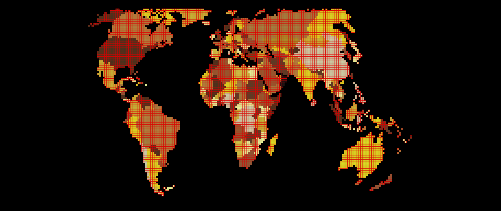
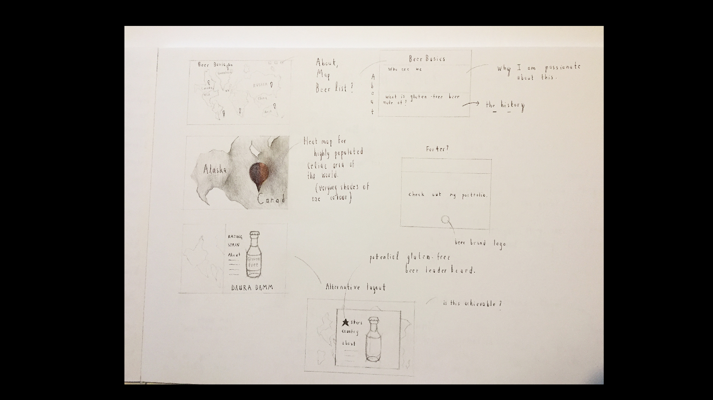
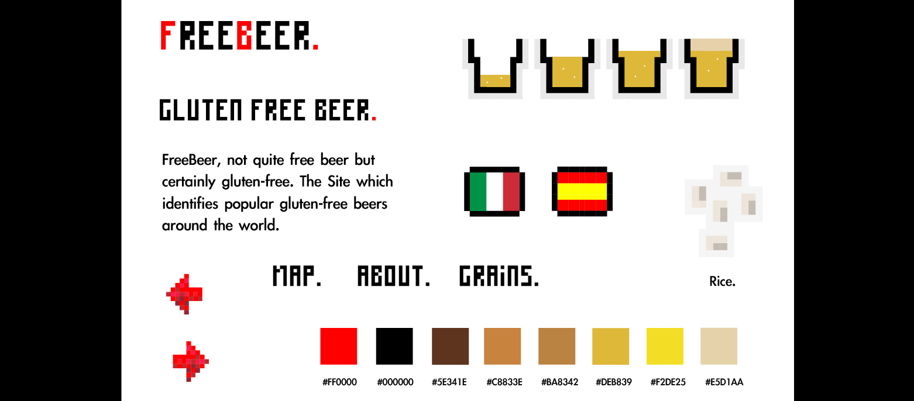
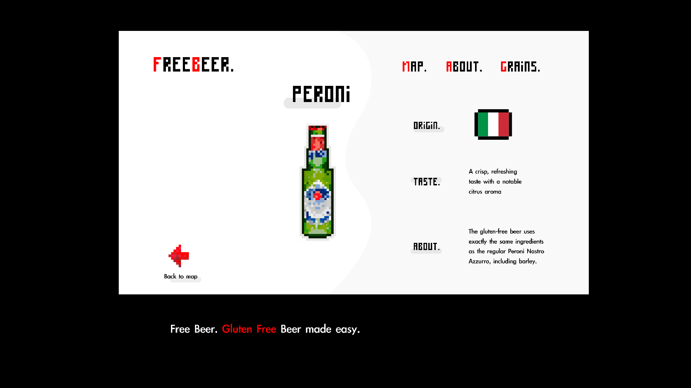
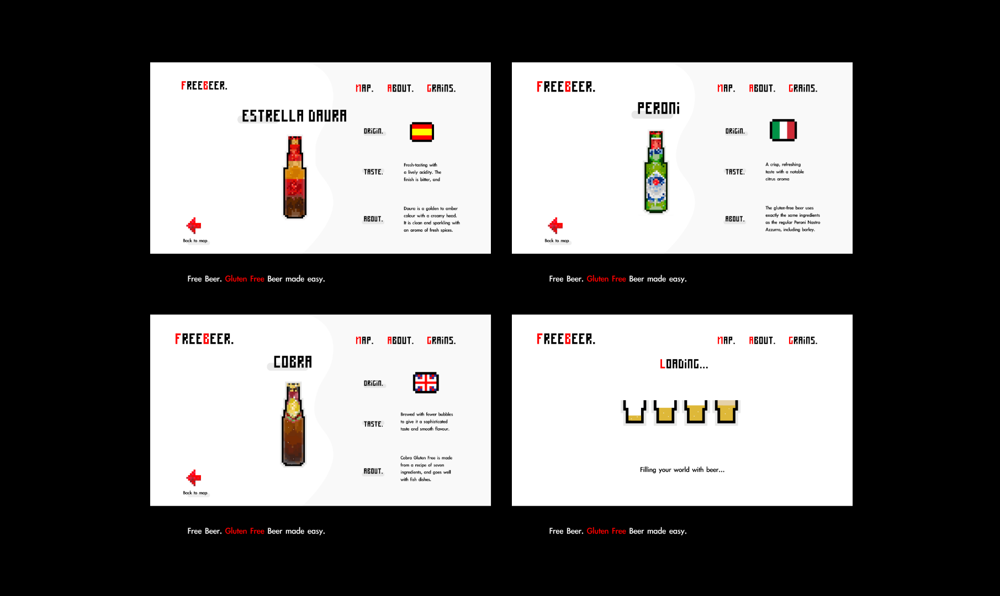

FreeBeer.
FreeBeer is a site which identifies gluten-free beers around the world.
Skills: UI, UX, wireframing, prototyping, usability-testing.
The Brief.
To create a digital product which creates community for people who either, have a gluten-free diet, love beer, like to travel, or all three.The product should inform the user about a variety of beers available on the gluten-free market.
Discover.
I started with a simple layout.
Define and Develop.
I created an element collage to layout the look and feel of FreeBeer ( gluten-free beer that is.) I kept the aesthetics simplistic yet slightly retro using a pixel illustration style.
Using the pixel illustration style I created a layout for the beer page. I have sectioned the content of the page into 4 main sections - the beer, its origin, taste and information about the beer.
I created multiple beer pages using the same format and layout.I created a loading screen for FreeBeer, using pints of beer to reflect the the theme of the product.
Deliver.
A final prototype, showing how the product works as a website.